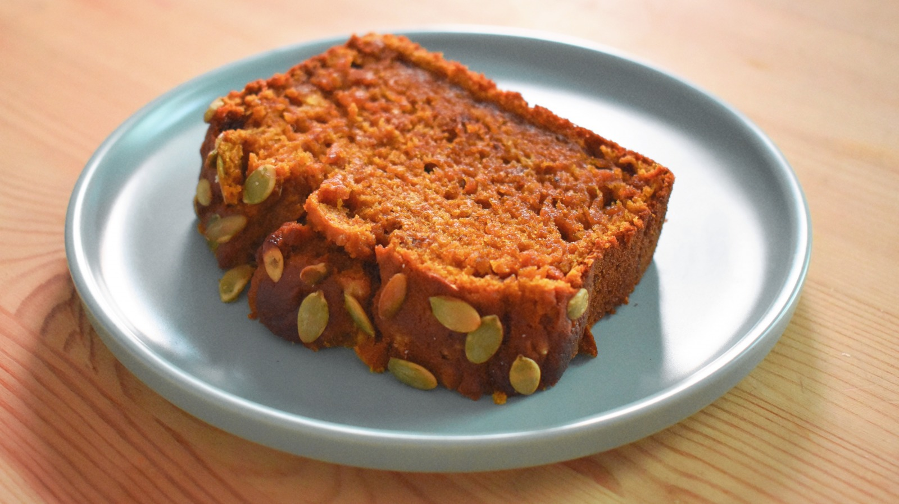

Starbucks® Pumpkin Bread

Description
A thick slice of moist pumpkin bread Starbucks®-style is the perfect companion for your morning cup of joe! Many other pumpkin bread recipes produce sad, squat loaves - but not this clone.
Here's a custom formula that makes enough batter to fill up a medium loaf pan. And when the bread is done, you'll slice the beefy loaf into eight thick square hunks of goodness that perfectly mimic the weight, color and flavor of the real thing.
- 1 1/2 cups all-purpose flour
- 1 teaspoon baking soda
- 1 teaspoon ground nutmeg
- 1 teaspoon ground cinnamon
- 1 teaspoon ground cloves
- 1/2 teaspoon baking powder
- 1/2 teaspoon salt
- 4 eggs
- 1 cup white sugar
- 1/4 cup light brown sugar
- 1/2 teaspoon vanilla extract
- 3/4 cup canned pumpkin
- 3/4 vegetable oil
Steps
- Prehead oven to 350 degrees F (175 degrees C) Grease a 8-1/2x4-1/2-inch of loaf pan.
- Combine flour, baking soda, nutmeg, cinnamon, cloves, baking powder, and salt together in a large bowl.
- Beat eggs, white sugar, brown sugar, and vanilla extract in a large bowl with an electric mixer on high speed until combined, about 30 seconds. Beat in pumpkin and oil. Add flour mixture; mix until batter is blended and smooth.
- Pour batter into the prepared loaf pan.
- Bake in the preheated oven until the top is dark brown and a toothpick inserted into the center of the bread comes out clean, about 70 minutes. Let cool in the pan, about 30 minutes. Invert onto a wire rack and slice it into 1-inch thick slices.